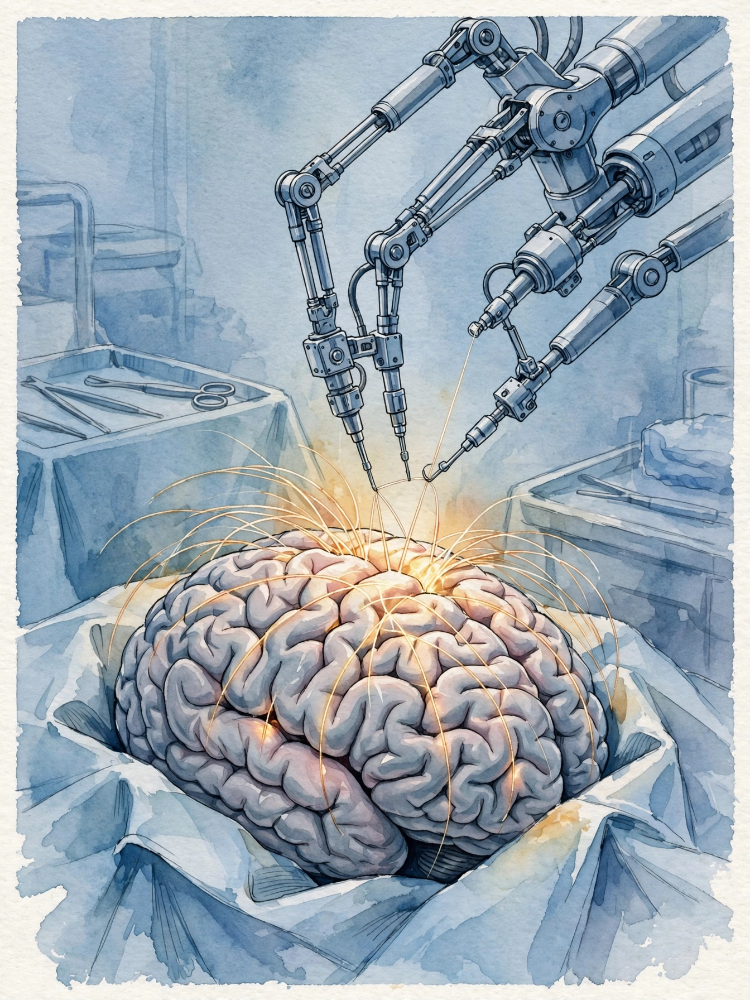
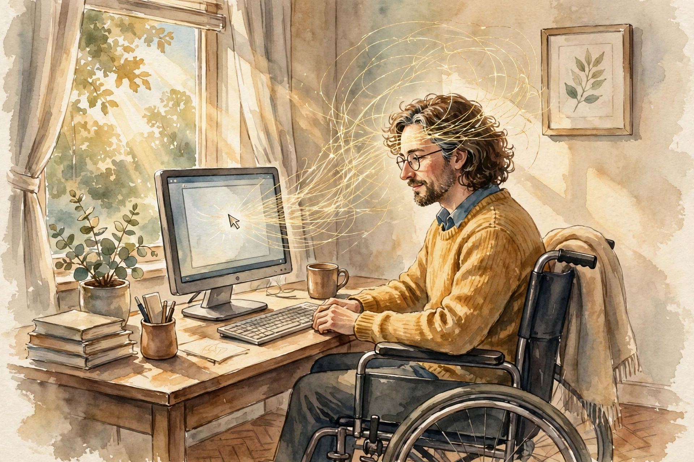

Huberman Lab · Episode 6 · Companion
Neuralink: Enhancing Human Brains
Neuralink's head neurosurgeon explains the implant: threads thinner than a hair, sewn by a robot, decoding motor cortex so quadriplegic people can move a cursor with thought. Plus a surgeon's tour of the brain's design flaws and the clearest alcohol finding on the track. This companion follows the conversation in order.

Illustration. Micron surgery: the robot sews what no human hand can place. Made for this page. AI-generated watercolor in a New Yorker style, made for this page. It carries no words or labels.
Watch. The official episode video on youtube-nocookie, the only external dependency on this page. Use the chapter menu above to jump to any section of this companion as you listen.
The Wisdom Index: every nugget in this companion
- The actuator must be a robot
- The surgeon still opens the skull
- Digital freedom first
- Unload difficulty onto software
- The confidence test
- Duct-taped modules
- Firmware below, supercomputer on top
- Plasticity declines
- The alcohol line
- The skull's design flaws
- Involuntary enrollment, voluntary participation
Opening section
Threads thinner than hair, placed by a robot
SOURCE Neuralink's implant uses electrode threads “smaller than the size of a human hair.” A robotic insertion device places them across a small region of the brain. The reason for the robot is mechanical, not theatrical: a human hand is not steady enough to grab a micron-width loop at the end of an electrode thread and place it blindly into the cortical surface at the right depth, through all the cortical layers, hundreds or thousands of times.
SOURCE The surgery is split by capability. The robot does the precise thread placement. A human neurosurgeon still does the crude part: opening the skin and skull and presenting a pristine brain surface for the robot to sew into.
The scale ladder of the surgery
All sizes from the episode. The millimeter-to-micron conversion is arithmetic. The hair is the episode's own reference object, given without a number.
Source: episode transcript, device section. Thread size, loop width, and drill-hole diameter are the episode's. 2 millimeters equals 2,000 microns by unit conversion.
SOURCE MacDougall's framing: Neuralink leads in robotic surgeons as much as in brain interfaces. The insertion engineering will spill into other neurosurgery and medical technology.
Nugget 1 · Engineering
The actuator must be a robot
What happened. Micron-width loops must land at exact depths through cortical layers, hundreds of times, placed blind. No human hand qualifies. The robot is not a flourish. It is the only actuator that meets the spec.
Why it matters. When the scale defeats the hand, the tool must change. Arguing for steadier hands misses the point. The task needs a different kind of mover.
The principle. State the scale and the count first. If the spec reads microns times hundreds, stop assigning it to hands.
Nugget 2 · Surgery
The surgeon still opens the skull
What happened. The robot sews the threads. The human neurosurgeon opens the skin and skull and presents the pristine surface. The crude part stays human. The precise part goes to the machine.
Why it matters. Automation splits work by capability, not by prestige. The surgeon's job did not vanish. It moved to the part where judgment and exposure matter most.
The principle. When a robot enters your field, ask which half is crude and which is precise. Keep the half where your judgment is the instrument.
Early section
First target: digital freedom for quadriplegics
SOURCE The first clinical indication: people with high spinal cord injury, essentially quadriplegic. Their brains are intact. Their motor cortex is pristine and fully capable of operating a body. The wiring between brain and limbs is broken.
SOURCE The near-term goal is not to reconnect the brain to the limbs. That is on the roadmap but years away. The near-term goal is digital freedom: the person imagines moving a hand, the implant reads the motor intentions from motor cortex, and software translates them into moving a mouse and typing on a keyboard. Nothing in the physical world moves at first. The cursor moves.

Illustration. Digital freedom: thought becomes cursor. AI-generated watercolor in a New Yorker style, made for this page.
SOURCE The decoding problem: the transformation from motor-cortex electrical signals through the brainstem and spinal cord to muscles is well studied, over 100 years of research. The transformation from motor-cortex signals to a mouse cursor is a new problem. Neuralink's approach unloads difficulty from the patient's brain onto software: smarter algorithms decode the motor intentions.
SOURCE The proof it works: monkeys. A small army of monkeys plays video games for smoothie rewards, and Neuralink holds the world record for bit rate of information coming out of a monkey's brain to control a cursor. The episode gives no bits-per-second number. Not in source.
SOURCE The longer roadmap: an implant in the brain talking to an implant in the spinal cord, bypassing the damaged area. The motor signals are intact above the injury. Most spinal wiring below the injury is intact. Reconnecting brain to body is, in MacDougall's words, not out of the question in some small number of years.
Nugget 3 · Medicine
Digital freedom first
What happened. Neuralink targets the cursor before the limbs. The brain-to-screen path is solvable now. The brain-to-body path needs a second implant and years of work.
Why it matters. Sequencing is the strategy. The tractable win funds and teaches the harder win. Promising limbs first would be the flashy order. The episode defends the solvable order.
The principle. Ship the solvable version first, even when the vision is bigger. The roadmap earns its later steps with earlier wins.
Nugget 4 · Design
Unload difficulty onto software
What happened. Instead of training the patient's brain to produce cleaner signals, Neuralink builds smarter decoders. The hard translation work lives in software, not in the person.
Why it matters. The user is the fixed constraint. The software is the variable. Every unit of difficulty moved from brain to code makes the device usable by more people with less training.
The principle. In any human-machine system, push complexity toward the side you can iterate fastest. That side is almost always the software.
Early middle section
The confidence test
SOURCE Huberman asks the question that tests the technology: would MacDougall implant himself? He says yes, absolutely, he would be excited to. The honest caveat: the first iteration would not be very useful for him, because he can already move his limbs, and the device's outputs are things he does easily with his hands.
SOURCE The principle behind the question: the fastest way to advance the technology is tests on someone who moves normally and deeply understands the system, not only on patients where every failure has many possible causes.
SOURCE MacDougall's own body already carries an experiment: he implanted a radio receiver in his own periphery, and in his family members, to show the utility of combining devices with the nervous system for everyday challenges. The episode presents this as science reality, not science fiction.
Nugget 5 · Trust
The confidence test
What happened. The head neurosurgeon says he would take the implant himself, excitedly, and he already carries a receiver implant of his own design. The caveat is stated in the same breath: version one would not help him much.
Why it matters. Willingness plus a stated limit is the credible combination. Pure enthusiasm would be sales. Enthusiasm with a boundary shows judgment.
The principle. Ask builders whether they would use version one. Then ask what it would not do for them. The second answer is the honest one.
Middle section
The brain, from the inside
SOURCE MacDougall's picture: the brain is a three pound lump of meat trapped in a prison of the skull, and it is miraculous that electrical impulses produce a human life. As a surgeon, he learned the brain is a collection of functional modules pinned together, duct-taped together. The evidence comes from failure modes: a young car-accident patient woke from surgery with bilateral frontal lobe damage and essentially no impulse control. Discrete damage, discrete loss.
SOURCE The modern fix for deep tumors: a 2-millimeter drill hole in the skull, a fiber-optic cannula with a laser, heating the tumor under real-time MRI temperature monitoring, pictures every second, killing tumor cells while sparing surrounding brain. Tumors that were once catastrophic to operate on now leave patients largely intact.
SOURCE MacDougall divides the brain into two layers. Deep structures: stereotyped, similar across species, handling body temperature, blood pressure, hunger, motivation, sleep-wake. The firmware. A fox and a human need the same housekeeping. Neocortex: the bumpy outer surface, vastly different between species, handling reasoning and problem-solving. The strange case: gelastic seizures, where a tumor in the hypothalamus, a deep structure, causes uncontrollable fits of mirthless laughter. The lesson: any neuron population can break, and the break reveals the function.
SOURCE On neuroplasticity, the adult capacity to rewire: it goes down in older brains. It is harder for older people to learn new things, make radical behavior changes, or kick long-held habits. Implanted electrodes are not the obvious answer for more plasticity. Neuralink stays in the electrical bin: decoding the brain through recording and stimulation.
Nugget 6 · Anatomy
Duct-taped modules
What happened. The surgeon sees the brain as modules pinned together, because damage deletes functions discretely: frontal lobes gone, impulse control gone with them.
Why it matters. Modularity explains both the miracle and the fragility. Each module does its job until it breaks, and the break is specific.
The principle. When a complex system fails in a specific way, the failure maps the structure. Read failures as anatomy.
Nugget 7 · Model
Firmware below, supercomputer on top
What happened. Deep structures run the housekeeping every mammal needs. The neocortex runs the reasoning that separates humans from foxes. A hypothalamic tumor causing mirthless laughter shows even the firmware can surprise.
Why it matters. The two-layer model organizes every brain question: is this firmware or supercomputer? The fix differs by layer.
The principle. Sort problems by layer before you solve them. Firmware problems need inputs: sleep, food, temperature. Supercomputer problems need training.
Nugget 8 · Aging
Plasticity declines
What happened. The adult brain rewires less with age. New learning, radical behavior change, and habit-breaking all get harder. Electrodes are not the obvious fix for this.
Why it matters. Knowing the decline is structural changes the strategy: you protect plasticity early and you stop expecting the older brain to learn like the younger one.
The principle. Price the decline into your plans. Learn the hard things while the wiring is still cheap to change.
Middle late section
Alcohol thins the cortex in a straight line
SOURCE The episode's most actionable health finding, from large-scale UK brain bank data: going from zero to one drink per week shows more brain atrophy, thinning of the gray matter cortex. One to two shows more. Two to three shows more. The relationship is near-linear: every additional regular drink maps to more thinning.
there's a near linear relationship between the amount that people are drinking and the amount of brain atrophy
Matthew MacDougall, alcohol section of the episode
The alcohol line
Each additional regular weekly drink maps to more gray-matter thinning. Near-linear from zero. Schematic bar heights. The shape is the finding.
Source: episode transcript, alcohol section (UK brain bank data). The dose steps and the near-linear shape are the episode's. Bar heights are schematic.
SOURCE MacDougall's reaction: he is shocked at the current state of alcohol advertising given data this clear. Resveratrol in red wine exists in infinitesimal amounts and its benefit is debated anyway. The atrophy finding is not debated in the episode's telling.
SOURCE Two design notes from the surgeon. The failure: the middle meningeal artery runs just inside the thinnest, most fracture-prone part of the skull, the temporal bone. A fracture there tears the artery, blood at arterial pressure crushes the brain, and people die from what would otherwise be a minor injury. The success: the brain is mostly fat floating in salt water, and the fluid sheath cushions rapid acceleration and deceleration well. And the base rate most people get wrong: most traumatic brain injuries come from car accidents and construction work, not football and hockey.
Nugget 9 · Health
The alcohol line
What happened. UK brain bank data shows cortical thinning rising with every regular weekly drink, near-linear from zero. No threshold. The resveratrol story does not offset it.
Why it matters. A straight line from zero removes the comfortable story of a safe amount. The decision becomes arithmetic, not folklore.
The principle. When the dose line starts at zero, count your doses against the line, not against the culture.
Nugget 10 · Design
The skull's design flaws
What happened. The body's most pressurized artery sits inside its thinnest bone: one fracture can be fatal. But the brain's fluid suspension handles acceleration better than any first-time designer would manage.
Why it matters. Good design review covers both the failure and the success. The artery placement is the flaw to respect. The suspension is the feature to admire.
The principle. Audit any design for its thinnest bone and its best cushion. Protect the first. Trust the second.
Closing section
Animals and the ethics
SOURCE Neuralink does animal research because there is no other way to develop the implant. No organization he knows goes further to give animals agency, MacDougall claims. No animal is compelled to participate beyond the surgery itself. The monkeys play video games for smoothie rewards. If the star monkey does not want to play on a given day, nobody forces it. The brain has no pain receptors, so the implanted recording itself is painless.
SOURCE Huberman's framing, which the chapter keeps: the animals do not opt into the experiment, only into each day's session. The ethical picture is involuntary enrollment, voluntary daily participation, strong welfare staffing.
SOURCE MacDougall adds that if the FDA ever allowed early experimentation in willing human participants, many people would step up, himself included, and animals could be spared. The episode presents this as a wish about the regulatory future, not a proposal.
Nugget 11 · Ethics
Involuntary enrollment, voluntary participation
What happened. The animals never chose the program. They choose each day's session, with real opt-out and no compulsion. The recording itself is painless.
Why it matters. The two-level structure is the honest accounting: it neither hides the enrollment nor denies the daily agency. Ethics lives in stating both levels plainly.
The principle. When you cannot get full consent, separate what was chosen from what was not. Maximize agency inside the unchosen frame, and say the frame out loud.
Takeaways
- The implant reads motor cortex through threads thinner than a hair, placed by a robot. The surgeon still opens the skull. The robot does the micron sewing.
- First target: digital freedom for quadriplegic people, thought to cursor. Reconnecting the limbs is the roadmap, years away.
- The decoding principle: unload difficulty from the patient's brain onto software. Smarter algorithms, not more electrodes, do the work.
- Alcohol thins the cortex in a near-linear line from the first weekly drink. No safe threshold is visible in the data.
- Animal research runs on involuntary enrollment with voluntary daily participation. MacDougall wishes willing humans could volunteer first so animals could be spared.